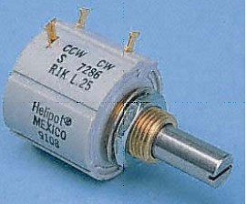
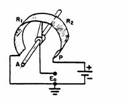
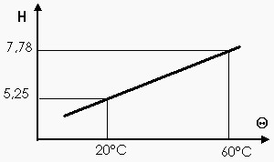

|
Les capteurs analogiques |
Les capteurs potentiométriques servent à détecter une position ou un déplacement rectiligne ou angulaire
La rotation de son axe est liée à la variation de la résistance comprise entre le curseur et l'une de butées par rapport à sa résistance totale :
on peut transmettre à distance, un signal électrique de tension proportionnel à la position de l'axe.
 
Exemple: Thermomètre
A chaque variation de température entre 20°C et 40°C correspond une nouvelle information informationnelle.
Ce type de capteur présente l'avantage de donner une fonction linéaire. Mais son utilisation n'est pas possible avec des systèmes numériques.

Créé avec HelpNDoc Personal Edition: Générateur de documentation et EPub gratuit